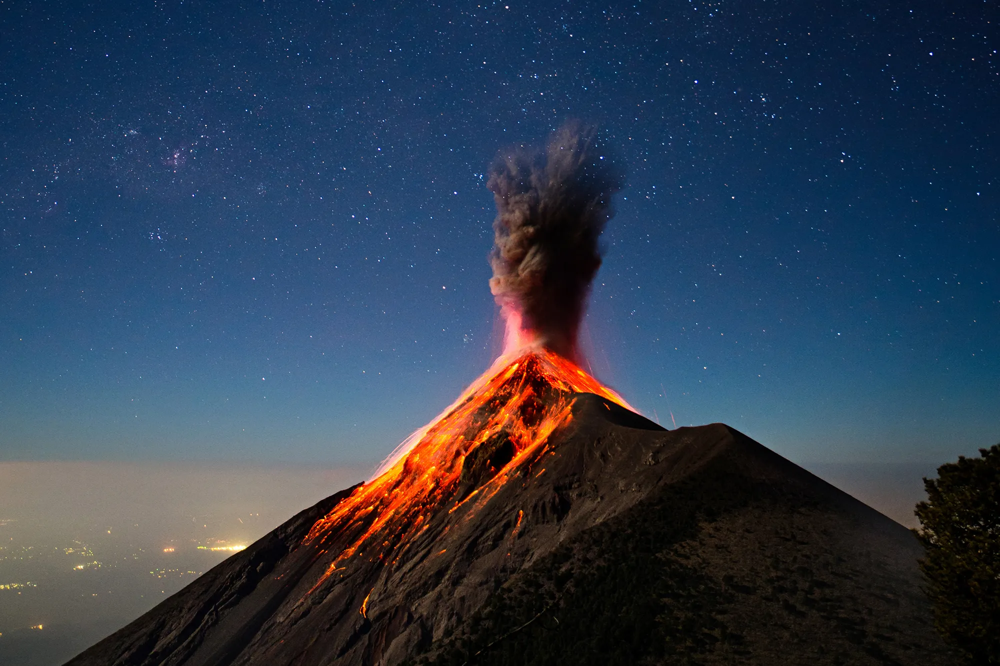

Volcanoes
Volcanoes are openings in Earth’s surface where molten rock, gases and ash can escape. Most volcanoes form near the edges of tectonic plates, although some form above areas called hotspots.
How Volcanoes Form
Tectonic Plates
Earth’s outer layer is divided into large sections called tectonic plates. These plates move slowly over time. When two plates move apart or collide, magma can rise towards the surface.
Magma and Lava
Molten rock below Earth’s surface is called magma. When magma reaches the surface, it is called lava. Lava can flow slowly down the side of a volcano or erupt violently into the air.

Types of Volcanoes
Shield Volcanoes
Shield volcanoes are wide and have gently sloping sides. They are usually formed by thin lava that can travel long distances before cooling. Mauna Loa in Hawaii is an example of a shield volcano.
Composite Volcanoes
Composite volcanoes are tall, steep-sided volcanoes made from layers of lava, rock and ash. They can produce powerful eruptions. Mount Fuji in Japan is a well-known composite volcano.
Why Volcanoes Are Important
Volcanoes can be dangerous, but they also provide benefits. Volcanic soil is often rich in nutrients and can be excellent for farming. Volcanic activity can also create new land and provide geothermal energy.
Image
Insert a picture of a volcano after the section titled “How Volcanoes Form.”
Use alternative text that clearly describes what is shown in the image.